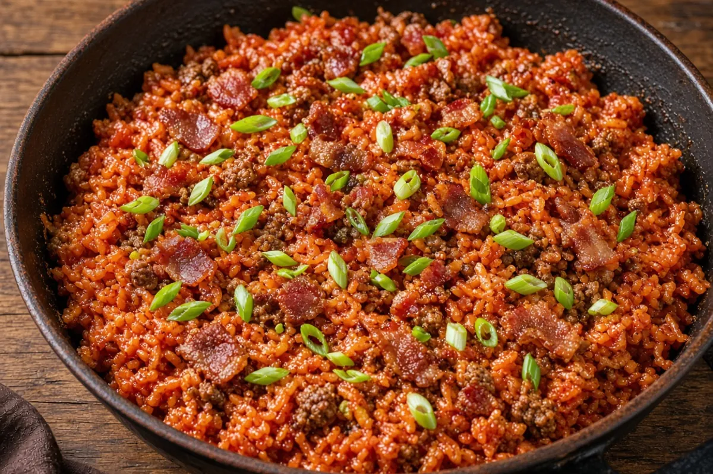

Savannah Red Rice with Ground Beef
Classic Lowcountry red rice baked with bacon, the trinity, and tomatoes, studded with crumbled ground beef. Same red-rice backbone as the crispy-chicken version — a double batch that makes dinner plus leftovers.
Adapted from Savannah Red Rice with Crispy Chicken Thighs

8 servings
By
Yield: 8 servings
Prep:
Cook:
Total:
Difficulty: Easy
Ingredients
- 2 lb ground beef, thawed
- 1 tsp kosher salt, for the beef, plus more to taste
- 1 tsp smoked paprika
- 1 tsp garlic powder
- 1/2 tsp black pepper
- 8 slices thick-cut bacon, chopped
- 1 large onion, diced
- 1 green bell pepper, diced
- 2 stalks celery, diced
- 3 cloves garlic, minced
- 1 (6 oz) can tomato paste
- 1 (28 oz) can crushed tomatoes
- 3 1/2 cups chicken bone broth, plus 1/2 cup extra hot broth as needed
- 3 cups long-grain white rice
- 1 tsp Cajun seasoning
- 2 tsp sugar
- 1/4 tsp cayenne pepper
- 4 green onions, sliced
Instructions
- Heat the oven to 375°F and chop the bacon and vegetables, 10 minutes.
- Cook the bacon in a 6-quart or larger oven-safe HexClad pot with a lid over medium heat until crisp, 7 to 8 minutes. Remove the bacon and leave about 1 Tbsp fat in the pot.
- Brown the beef over medium-high with the 1 tsp salt, smoked paprika, garlic powder, and pepper, breaking it into small crumbles, until it reaches 160°F, 8 to 10 minutes. Remove it and spoon off excess fat, leaving about 2 Tbsp.
- Cook the onion, bell pepper, and celery over medium for 5 to 7 minutes, then stir in the garlic and tomato paste and cook until the paste darkens slightly, 2 minutes.
- Stir in the crushed tomatoes, broth, rice, Cajun seasoning, sugar, and cayenne, return the beef and bacon, and bring to a full boil over medium-high heat, stirring so the rice does not stick, 5 to 8 minutes. Go light on extra salt because the bacon, broth, and Cajun seasoning are salty.
- Working quickly, cover the pot tightly with a sheet of foil, then the lid. Bake at 375°F for 30 minutes.
- Uncover and stir once, folding the top rice down into the liquid, 1 minute. If the mixture looks dry, add a splash of the extra hot broth. Re-cover with the foil and lid and bake 20 to 30 minutes more, until the rice is tender all the way through (taste a few grains from the top and the center). If any rice is still firm, add 1/2 cup hot broth, cover, and bake 10 minutes more.
- Rest covered for 5 minutes, fluff, and top with the green onions, 5 minutes.
Notes: One 2 lb bag of ground beef makes dinner plus leftovers for two. Use a 6-quart or larger pot so the rice and liquid have room to boil without crowding. Refrigerate leftovers in shallow containers within 2 hours; reheat to 165°F. If leftover rice is crunchy, add 1/2 cup hot broth, cover, and bake at 350°F for 20 to 25 minutes.